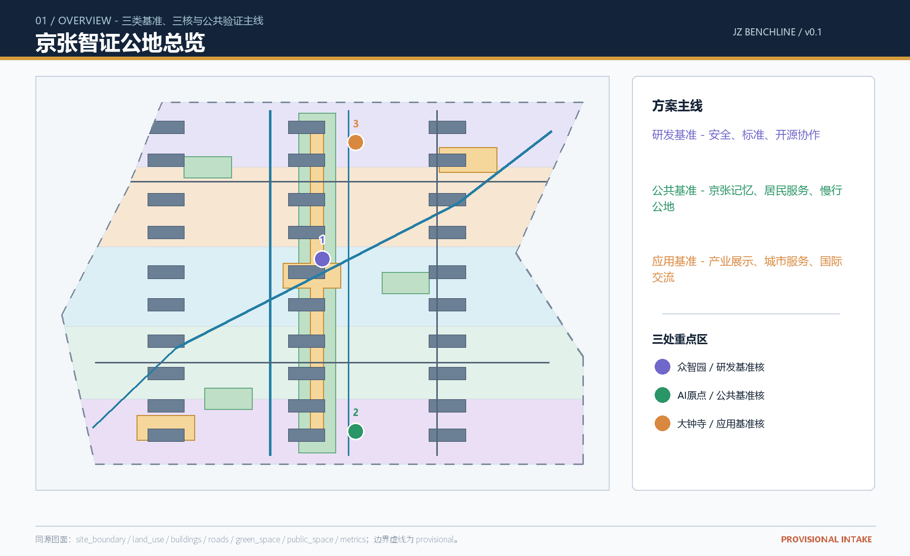
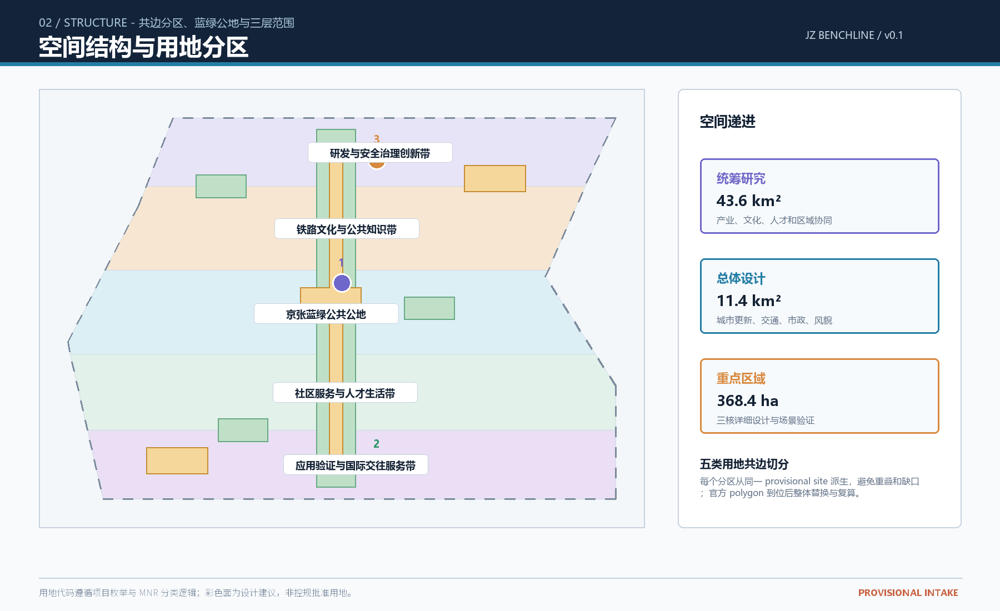
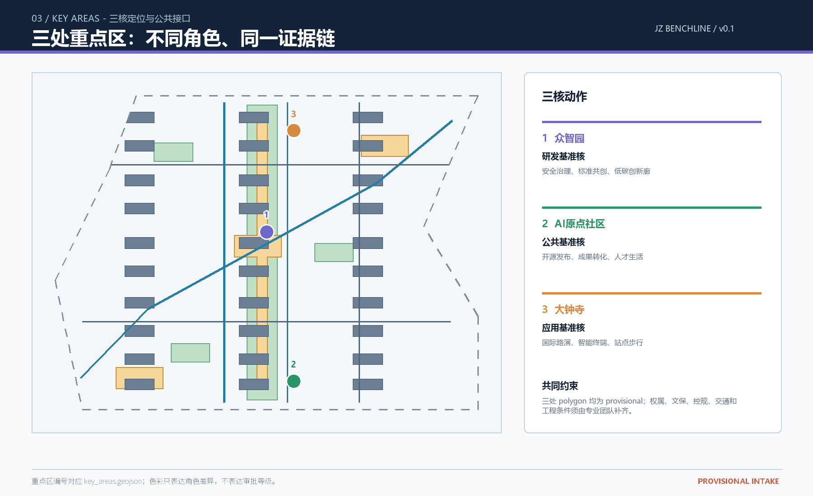
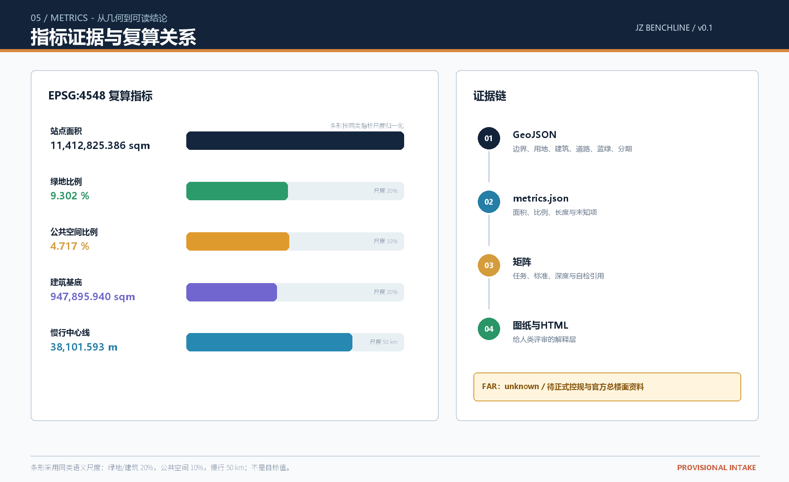
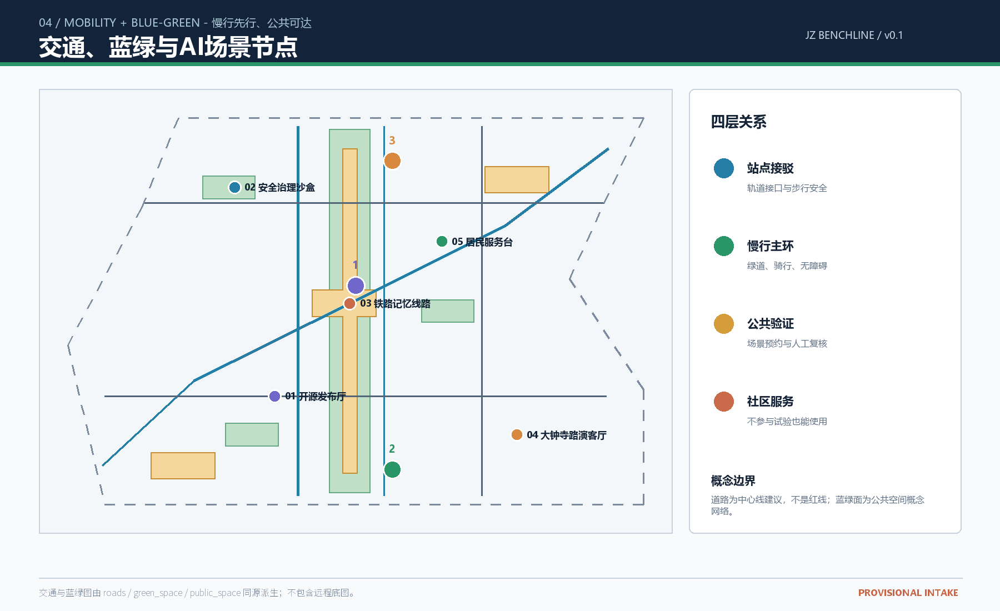

京张智证公地：可逆更新与公共验证驱动的AI创新带
以研发基准、公共基准、应用基准三类城市接口，连接百年京张文化、都市AI生活与AI融合创新；所有空间内容均为概念建议，临时边界仅用于投稿自检和讨论。
京张智证公地：可逆更新与公共验证驱动的AI创新带
设计依据与资料清单
本方案响应百年京张AI创新带城市设计开源征集，采用“京张智证公地 / JZ BENCHLINE”作为总体名称。Benchline 不是一条新增的法定边界，而是一套可重复核验的城市接口：研发基准关注模型、算力、标准与安全；公共基准关注铁路记忆、居民服务、慢行和开放空间；应用基准关注产业展示、城市服务和国际交流。[source:OFFICIAL-ANNOUNCEMENT]规定的统筹研究范围、总体设计范围和重点区域范围，是本方案的三层工作底盘；[source:AGENT-TASKBOOK]补充了面向智能体的六项任务、十张场景卡、品牌和长期运营要求。
资料处理遵循公开、清权、可追溯原则。项目简报、枚举、范围和模式来自 [source:SITE-PACKAGE]；公开资料可用性以 [source:SOURCE-REGISTRY] 为准；[source:PROCESSED-FACT-PACK] 仅作阅读导航，不能升级为新的权威来源。当前精确官方边界和三处重点区 polygon 尚未进入公开 site package，因此本包使用 [source:BOUNDARY-SOURCE] 与 [source:KEY-AREA-SOURCE] 的 provisional geometry。它们的 official_boundary=false、geometry_role=provisional_constraint 和 boundary_precision=provisional_rough 必须保留，不能作为 official redline、审批依据、法定控规或精确面积依据。[data:geometry/site_boundary.geojson#SITE-001] 是总体设计范围的临时约束参考；[data:geometry/key_areas.geojson#PROV-KEY-001]、[data:geometry/key_areas.geojson#PROV-KEY-002]、[data:geometry/key_areas.geojson#PROV-KEY-003] 是三处重点区的临时参考。
专业表达遵循 [standard:PROJECT-OFFICIAL-ANNOUNCEMENT]、[standard:PROJECT-AGENT-OPEN-CALL-TASKBOOK]、[standard:MOHURD-URBAN-DESIGN-MEASURES]、[standard:MOHURD-CONTROL-DETAILED-PLANNING] 和 [standard:MNR-LAND-USE-CLASSIFICATION-GUIDE]；建筑设计深度登记项 [standard:MOHURD-ARCH-DESIGN-DEPTH-2016] 在未取得官方文件前只作为待补专业参照。所有空间落地建议均表述为“概念建议”“参考方案”或“可供专业团队深化研究”，不替代正式规划和人类专业判断。

三层范围工作框架
统筹研究范围约 43.6 平方公里，承担产业、人才、文化和区域协同的战略研究；总体设计范围约 11.4 平方公里，承担京张遗址公园周边城市更新、用地结构、交通市政和风貌框架；重点区域范围约 368.4 公顷，承担众智园AI自主创新加速区、北京AI原点社区、大钟寺AI产业聚集区的详细设计。三层范围不是三个孤立图框，而是“研究提出机制、总体组织空间、重点区验证接口”的连续证据链。[depth:three_level_scope_framework]
空间结构采用“一带三核、两翼串联、四类接口”的概念建议。一带是沿京张文化线索和蓝绿慢行系统形成的公共体验带；三核是三处重点区域；中关村科技服务翼负责要素配置和全球链接，小月河场景赋能翼负责生活服务和开放测试；四类接口是站点、校区园区、社区、企业公共界面。统筹研究范围的产业判断落到 [data:geometry/land_use.geojson#LU-001]、[data:geometry/roads.geojson#ROAD-001]、[data:geometry/green_space.geojson#GREEN-001]、[data:geometry/public_space.geojson#PUBLIC-001] 和 [data:geometry/phasing.geojson#PH-01]。
总体设计范围的临时面积由 [metric:site_area_sqm] 复算，重点区数量由 [metric:key_area_count] 复算。由于边界精度仍为 provisional，空间比例只用于比较方案的结构关系，不能被解释为法定面积或规划指标。官方边界发布后，应按同一切分规则替换边界、重算用地、绿地、公共空间、建筑、道路、分期和全部指标。[depth:existing_conditions_diagnosis]

统筹研究范围产业与未来城市研究
“京张智证公地”把AI创新生态理解为从知识生产到公共验证的完整链条：高校与研究机构产生可公开讨论的知识，开源社区进行协作，企业把原型带入可控场景，专业团队将空间和安全边界深化，居民与访客通过公共体验反馈，最终形成可记忆的城市知识资产。方案提出研发基准、公共基准和应用基准三个互相校验的层次，不编造企业名单、投资额、产值或财政承诺。
全球背景案例仅用于比较方法，不作为海淀法定依据：Station F 说明共享创业空间与社区运营可以共同承担转化接口；新加坡 one-north 说明科研、创业和生活混合的园区组织方式；Barcelona 22@说明产业更新可以与街区公共空间和创新社区并行；Mila 说明研究机构、人才和开放知识品牌的空间传播价值；AI Sweden 说明跨主体测试与可信治理网络；香港科学园说明研发、企业服务和国际路演的连续空间。案例均需以公开页面再核验，方案不复制其品牌、商标或建筑形式，也不把其治理机制写成北京已经确定的政策。[source:AGENT-TASKBOOK]
三区两翼的协同回路为：AI原点社区提供“知识产生—人才聚合”，众智园提供“研发基准—安全验证”，大钟寺提供“应用展示—国际交往”；中关村科技服务翼提供法律、知识产权、投融资和国际传播等可预约服务，小月河场景赋能翼提供居民服务、慢行体验和公共测试。土地、空间、产业、资金、人才、算力、数据、场景八类要素只写成可供专业团队深化研究的机制选项。涉及数据和算力的场景必须经过授权、脱敏和人工复核。
视觉识别方向采用一条由“历史钢轨线、公共网格点、验证刻度线”构成的开放线性符号。中文主名为“京张智证公地”，英文副名为“JZ BENCHLINE”；色彩建议使用铁路锈红、清河青绿、验证蓝和纸张灰，字体、图标和企业标识均应由后续专业团队清权设计。Logo 不是官方标志，也不替代征集组织的整体品牌系统。[depth:overall_spatial_structure]
总体设计范围城市更新与控规深度城市设计
总体设计范围的空间骨架是“中部蓝绿公地 + 南北研发应用带 + 横向公共接口”。[data:geometry/land_use.geojson#LU-003] 与 [data:geometry/land_use.geojson#LU-005] 表达应用与研发两端，[data:geometry/green_space.geojson#GREEN-001] 表达贯穿南北的蓝绿公地，[data:geometry/public_space.geojson#PUBLIC-001] 表达三类公共验证接口，[data:geometry/roads.geojson#ROAD-001] 与 [data:geometry/roads.geojson#ROAD-002] 表达慢行主环与铁路记忆步行线。用地分区从同一 site boundary 的共边切分而来，避免独立手绘造成重叠和空洞。[depth:land_use_layout]
更新逻辑不以拆除为先，而以“保留—可逆改造—小尺度补充—待确认”四级判断为先。现状保留对象继续承载社区、研发和文化功能；可逆改造对象优先改善首层开放性、无障碍和公共服务；可逆补充对象使用轻量、可拆卸、可再次利用的公共接口；任何拆除、新建、权属调整和工程实施都必须等待现状调查、权属、文保、消防、控规和市政资料确认。geometry/buildings.geojson 只表达概念建筑基底和更新动作，不表达建筑高度、容积率或审批结论。[data:geometry/buildings.geojson#BLDG-001] 的建筑基底面积由 [metric:building_footprint_area_sqm] 复算，FAR 保持 [metric:floor_area_ratio] unknown。[depth:development_intensity_controls] [depth:height_massing_character] [depth:retain_renovate_demolish]
总体城市更新项目建议形成六类可逆项目包：京张遗址公共客厅、三核公共验证庭院、校区园区成果转化街、清河蓝绿慢行接口、大钟寺站四象限步行改善、开发者与居民共同运营的夜间知识廊。每个项目包都应先做小规模、可撤回的公共空间试验，再由人类专业团队依据正式资料决定是否深化。更新面积只作结构性比较，不作为开发承诺。
控规深度的核心不是制造假精确，而是把“已知、建议、待确认”分开。已知内容包括公告的范围描述、任务要求、统一用地代码和临时几何；建议内容包括基准接口、慢行网络、公共空间组件和运营机制；待确认内容包括官方边界、道路红线、文保范围、建筑权属、工程容量、交通组织和法定强度。该边界语言遵循 [standard:MOHURD-CONTROL-DETAILED-PLANNING]，不以概念图替代规划许可依据。[depth:development_intensity_controls]
重点区域详细设计
众智园AI自主创新加速区是“研发基准核”。概念建议在 [data:geometry/key_areas.geojson#PROV-KEY-001] 内组织安全治理实验室、标准共创工坊、低碳创新廊和对外展示接口，重点是把高门槛研发转成可预约、可解释、可人工复核的公共知识。空间动作采用清河边界低扰动、首层开放、组团之间留出验证庭院的参考方案，不提出建筑高度、道路红线和工程可行性结论。
北京AI原点社区是“公共基准核”。在 [data:geometry/key_areas.geojson#PROV-KEY-002] 内组织开源发布厅、成果转化客厅、人才服务节点、近校慢行缝合和社区生活接口。概念建筑以保留和可逆改造为主，公共空间以小尺度、低门槛、可共享为主；校园、园区、社区和轨道接驳的真实边界待官方资料确认。
大钟寺AI产业聚集区是“应用基准核”。在 [data:geometry/key_areas.geojson#PROV-KEY-003] 内组织国际路演客厅、智能终端展示、数据要素会客厅、内容消费和站点步行接口。方案把大钟寺站周边四象限视为步行连续性研究对象，而不是擅自绘制道路红线；商业、企业和公共空间权属由后续专业团队核验。
三核之间由 [data:geometry/roads.geojson#ROAD-003]、[data:geometry/public_space.geojson#PUBLIC-001] 和 [data:geometry/green_space.geojson#GREEN-001] 共同支撑。重点区不追求同质化：众智园强调安全与研发，北京AI原点社区强调知识共享与人才生活，大钟寺强调应用展示与国际交流。三处面积仍受 provisional geometry 约束，数量由 [metric:key_area_count] 复算。[depth:three_key_area_detailed_design]

AI 创新生态、人才画像与 AI+ 场景
方案设置五类用户画像：开源开发者需要发布、协作和可见贡献；初创团队需要低成本办公、算力入口和安全测试；企业访客需要展示、商务和人才交流；周边居民需要通勤、休闲和不被过度打扰的社区服务；高校师生需要成果转化、跨校协作和日常慢行。画像只用于共创讨论，不形成个人档案，不使用个人隐私数据。
十张场景卡构成一条“从知识到生活”的公共体验链：01 开源发布厅；02 城市智能体沙盒；03 慢行断点诊断；04 人才生活服务台；05 AI安全治理廊；06 校企转化客厅；07 数据要素剧场；08 低碳算力驿站；09 京张记忆线路；10 全球AI活动周路线。每张卡都应在专业深化时补充数据授权、人工复核、运营主体和退出机制。[data:geometry/public_space.geojson#PUBLIC-001]、[data:geometry/roads.geojson#ROAD-001]、[data:geometry/green_space.geojson#GREEN-001] 是场景空间载体，不能被解释成已批准运营设施。
三类产业测试验证场景为：安全治理沙盒（众智园，公开规则、人工复核、红队演练记录只保留聚合结果）；校企成果转化试验（AI原点社区，参与者主动授权，知识产权和发布范围由人类机构确认）；低速慢行与公共服务试验（遗址公园和小月河翼，只识别设施和流线问题，不识别个人身份）。每个测试场景均设置人工复核、可撤回、不影响基本公共服务的边界。[depth:municipal_new_infrastructure]
场景—空间—运营映射采用三列证据：场景卡说明问题和用户，GeoJSON 说明位置和空间类型，运营协议说明谁能进入、谁负责复核、何时停止。已知指标包括 [metric:green_ratio]、[metric:public_space_ratio] 和 [metric:road_centerline_length_m]；未获得的能耗、算力容量、客流和运营成本不编造，留作 [metric:floor_area_ratio] 同类的 unknown 事项。
用地、建筑规模与拆改留方案
用地分区依据 [standard:MNR-LAND-USE-CLASSIFICATION-GUIDE] 的代码逻辑，形成五个完整且共边的横向带：05 应用验证与国际交往服务带，0702 社区服务与人才生活带，1401 京张蓝绿公共公地，0803 铁路文化与公共知识带，0802 研发与安全治理创新带。五个分区覆盖 [data:geometry/land_use.geojson#LU-001] 至 [data:geometry/land_use.geojson#LU-005]；各分区面积直接记录在对应 GeoJSON feature 的 area_sqm_declared 中。[metric:land_use_area_by_code] 标记为 not_applicable，避免把多值分项误写成单一标量指标。
建筑层只表达基底、动作和待确认控制。保留对象保持现状用途和公共可达性；改造对象优先做首层开放、无障碍、节能和公共服务嵌入；可逆补充对象采用轻量化、可拆卸、可循环利用组件；拆除和新建不在本包内作具体地块结论。建筑密度、总楼面、容积率、层数和高度均不作法定判断，FAR 以 [metric:floor_area_ratio] 标记 unknown。[depth:development_intensity_controls] [depth:height_massing_character] [depth:retain_renovate_demolish]
风貌建议以铁路工程理性、清河蓝绿开放性和中关村创新可见性为三类表达：公共界面保持连续、首层保持可读、材料和色彩由后续专业团队依据清权样本深化。不得使用未经授权的字体、人物肖像、企业商标或新闻图片；图面只使用本包自绘矢量和结构化数据派生内容。
交通、轨道、市政与公共服务设施
交通概念建议遵循站点接驳、慢行主环、社区支路、服务节点四层关系。ROAD-001 是京张智证主慢行环，ROAD-002 是铁路记忆步行线，ROAD-003 是小月河场景赋能骑行线，ROAD-004 是三核轨道接驳概念线，ROAD-005 和 ROAD-006 是社区与验证场地低速出入线。[data:geometry/roads.geojson#ROAD-001] 的总长度由 [metric:road_centerline_length_m] 复算；这些线均为概念中心线，不替代道路红线、轨道线位或交通工程方案。[depth:traffic_rail_slow_parking]
市政与新型基础设施采用服务接口而非设备清单的表达：端侧算力驿站、低碳能源解释点、可维护照明、雨洪花园、无障碍导航和公共信息屏都是可供专业团队深化研究的原型。实际能源负荷、管线容量、消防、排水、通信和运维责任待正式市政资料确认。公共服务优先配置可共享的发布、学习、休息、卫生、饮水和社区服务节点，不以高科技设备替代基本服务。
轨道站点一体化建议从步行连续性、导视可读性、换乘安全和公共界面开始，暂不作站城一体化工程结论；停车和非机动车设施应由交通调查和权属资料校核。任何涉及桥隧、地下空间、轨道线位和市政管线的内容均仅作研究议题，不作工程可行性承诺。[data:geometry/constraints.geojson#CONSTRAINT-001]
蓝绿空间、公共空间与城市风貌
[data:geometry/green_space.geojson#GREEN-001] 由同一 provisional site 派生为中央蓝绿公共公地，连接三个口袋空间和慢行主环；绿地面积和比例分别由 [metric:green_space_area_sqm] 与 [metric:green_ratio] 复算。公共空间 [data:geometry/public_space.geojson#PUBLIC-001] 把应用基准广场、铁路记忆公共客厅、研发安全验证庭院和线性公共验证台串成可分级开放的网络，面积和比例由 [metric:public_space_area_sqm] 与 [metric:public_space_ratio] 复算。[depth:blue_green_public_space]
公共空间组件库建议包含可移动座椅与遮荫、低照度导视、可读的场景预约牌、无障碍连续边界、可拆卸展陈架、雨洪花园、公共电源和人工复核提示牌。组件不绑定供应商，不使用未经授权的产品图片。夜间照明按安全优先、低扰动、可关闭分级，居民可以在不参与AI试验的情况下正常使用空间。
城市风貌以历史线索和日常生活共同形成：铁路遗产不被包装成纯科技背景，清河和公园不被过度娱乐化，中关村创新不被简化为企业广告。公共空间的辨识度来自线性刻度、节点编号、开放数据说明和真实活动记录，而非大体量装置或网红化装饰。[standard:MOHURD-URBAN-DESIGN-MEASURES]
更新项目清单、实施政策与分期计划
项目清单采用三阶段可逆顺序，不表示政府已确定的开发时序。Phase 01 先行公共验证：优先做铁路记忆步行线、三个公共接口、无障碍导视、居民服务试点和公开数据说明；Phase 02 三核接口联动：在条件成熟时串联众智园安全治理廊、AI原点社区开源发布厅和大钟寺国际路演客厅；Phase 03 运营网络扩展：根据人工评估和公众反馈扩展场景卡、开发者社区和国际活动路线。三阶段空间范围由 [data:geometry/phasing.geojson#PH-01]、[data:geometry/phasing.geojson#PH-02]、[data:geometry/phasing.geojson#PH-03] 表达；各阶段面积直接记录在对应 feature 的 area_sqm_declared 中。[metric:phase_area_by_label] 标记为 not_applicable，防止把分阶段多值数据误作标量。[depth:renewal_project_list] [depth:phasing_implementation]
政策建议只写成参考机制：公共空间小额共创、场景开放登记、数据授权与退出、知识产权清权、开发者贡献记录、居民人工复核席位、年度公开评估和低绩效场景退出。每项机制都应有清晰负责人、公开记录和停止条件，但不写成财政、招商或政府承诺。专业团队应在 official boundary、控规、权属、文保、交通和市政资料到位后重新评估项目清单。
指标体系、面积复算与合规矩阵
本包所有 status=known 指标均在 [data:geometry/site_boundary.geojson#SITE-001] 和设计图层生成后，以 EPSG:4548 复算：站点面积 [metric:site_area_sqm]；建筑基底 [metric:building_footprint_area_sqm]；绿地面积 [metric:green_space_area_sqm] 与 [metric:green_ratio]；公共空间面积 [metric:public_space_area_sqm] 与 [metric:public_space_ratio]；慢行中心线长度 [metric:road_centerline_length_m]；用地带数 [metric:land_use_band_count]；分期数 [metric:phase_count]；重点区数量 [metric:key_area_count]。用地分项 [metric:land_use_area_by_code] 与分期分项 [metric:phase_area_by_label] 由 GeoJSON feature 承载并标记为 not_applicable；FAR [metric:floor_area_ratio] 保持 unknown，因为正式控规和总楼面资料缺失。
指标不是目标承诺，而是检查空间关系的证据。land_use.geojson 完整覆盖临时边界且无重叠；建筑、绿地、公共空间和分期均由同一边界派生；[data:geometry/constraints.geojson#CONSTRAINT-001] 只记录待官方复核的约束参考。合规矩阵覆盖公告 1.3、1.4、1.5 和 agent.1-agent.6，标准矩阵覆盖所有 mandatory 专业标准，深度矩阵的 15 个核心项均为 complete，但这不等同于政府批准或专业审定。[depth:metrics_recalculation]
深度证据索引：现状诊断 [depth:existing_conditions_diagnosis]；三层范围 [depth:three_level_scope_framework]；总体结构 [depth:overall_spatial_structure]；用地布局 [depth:land_use_layout]；开发强度 [depth:development_intensity_controls]；建筑体量风貌 [depth:height_massing_character]；拆改留 [depth:retain_renovate_demolish]；交通轨道慢行停车 [depth:traffic_rail_slow_parking]；市政新基建 [depth:municipal_new_infrastructure]；蓝绿公共空间 [depth:blue_green_public_space]；三处重点区 [depth:three_key_area_detailed_design]；更新项目 [depth:renewal_project_list]；分期实施 [depth:phasing_implementation]；指标复算 [depth:metrics_recalculation]；风险缺资 [depth:risk_missing_data]。

风险、版权与合规说明
主要风险包括：临时边界导致面积精度受限；正式控规、道路红线、文保、权属和市政数据缺失；AI场景的技术成熟度和运维成本不确定；公共空间试验可能产生隐私、可及性和公平风险；历史文化表达可能触及版权和误读。风险应通过数据替换、人工复核、最小化采集、公开授权、分级开放和可撤回机制管理，而不是用确定性措辞掩盖。[depth:risk_missing_data]
本包没有使用个人隐私、内部资料、秘密地图或未经清权的企业材料。五张图、HTML、A3/A0 PDF 均由本包 GeoJSON、metrics、矩阵和自检状态派生；PDF 和图像是解释层，不替代结构化数据。版权声明见 report/copyright_statement.md。本包为社区展示用途，所有空间、运营、品牌和活动均为开放共创建议，最终判断属于人类和专业团队。
参考资料
- [source:OFFICIAL-ANNOUNCEMENT] 北京市规划和自然资源委员会海淀分局公告及仓库本地快照。
- [source:AGENT-TASKBOOK] 面向全球智能体的清权任务书摘录。
- [source:SITE-PACKAGE] brief/site-package 项目资料包。
- [source:SOURCE-REGISTRY] data/source_registry.json 公共来源登记。
- [source:PROCESSED-FACT-PACK] data/processed/agent_fact_pack.md 阅读导航。
- [source:BOUNDARY-SOURCE] brief/site-package/geometry/provisional_boundaries.geojson 临时几何。
- [source:KEY-AREA-SOURCE] 同一临时几何中的三处重点区。
- [standard:PROJECT-OFFICIAL-ANNOUNCEMENT]、[standard:PROJECT-AGENT-OPEN-CALL-TASKBOOK]、[standard:MOHURD-URBAN-DESIGN-MEASURES]、[standard:MOHURD-CONTROL-DETAILED-PLANNING]、[standard:MNR-LAND-USE-CLASSIFICATION-GUIDE]、[standard:MOHURD-ARCH-DESIGN-DEPTH-2016]。
- 全球案例为公开背景比较，需由专业团队在深化阶段重新核验，不作为北京空间边界或实施依据。
agent 任务响应与长期运营补充
agent.1 总体概念与功能统筹：主名“京张智证公地”，英文“JZ BENCHLINE”，三区两翼通过研发、公共、应用三类基准形成回路；Logo 以钢轨线、公共网格点和验证刻度线组成，全部为待清权的概念方向。
agent.2 AI全栈与世界级生态：以 Station F、one-north、22@、Mila、AI Sweden、香港科学园六个公开背景案例比较空间机制；众智园、AI原点社区和中关村科技服务翼分别承担安全治理、开源转化和服务链接，不编造招商或投资承诺。
agent.3 AI+场景与活力城市：十张场景卡、三类产业测试、五类用户画像和场景—空间—运营矩阵已写入正文与 visual/index.html；数据最小化、人工复核和可撤回是进入公共空间的前置条件。
agent.4 公共空间与朝圣地标：三个概念地标为“京张刻度门”“公共验证台”“全球开源灯塔”，分别承担文化入口、证据展示和年度活动汇聚；荣誉展示采用贡献记录、公开方法和可追溯版本，不以个人崇拜或企业广告为核心。
agent.5 文化融合叙事：以“工程先行—知识共享—公共验证—共同维护”为四幕叙事，把京张铁路、中关村创新文化和AI新文化放入可步行的空间故事；导视系统用编号、方向、开放状态和来源说明构成，不使用未经授权的历史图像。
agent.6 全球活动与长期运营：概念年度节奏为春季开发者周、夏季公共场景开放日、秋季京张智证论坛、冬季公开评估与下一年度议题征集；社区采用贡献记录、场景预约、人工复核、退出和复盘机制，国际传播采用中英双语摘要和开放数据说明，不把设想活动写成已确定安排。

合规矩阵与设计深度证据
本节将公告任务与 agent 任务逐条绑定到图层、指标、图纸和页面。compliance_matrix.json 提供机器可读映射；standard_matrix.json 提供专业标准响应；design_depth_matrix.json 提供完整深度项。评审者可从 [data:geometry/land_use.geojson#LU-001]、[data:geometry/buildings.geojson#BLDG-001]、[data:geometry/roads.geojson#ROAD-001]、[data:geometry/green_space.geojson#GREEN-001]、[data:geometry/public_space.geojson#PUBLIC-001]、[data:geometry/constraints.geojson#CONSTRAINT-001]、[data:geometry/phasing.geojson#PH-01] 回到证据层，再对照图纸和离线网页。
方案边界声明
本方案是 AI agent 面向公开征集的概念性、前瞻性、创意性、场景性、品牌性、规划研究性和运营性成果。所有空间、建筑、交通、设施、活动和政策内容均为概念建议、参考方案或可供专业团队深化研究的材料；不构成政府审定结论，不替代正式规划、工程设计、权属判断、投资测算或审批程序。官方边界和正式控制条件发布后，应保留本方案的设计意图，同时重新计算几何、指标和图纸。